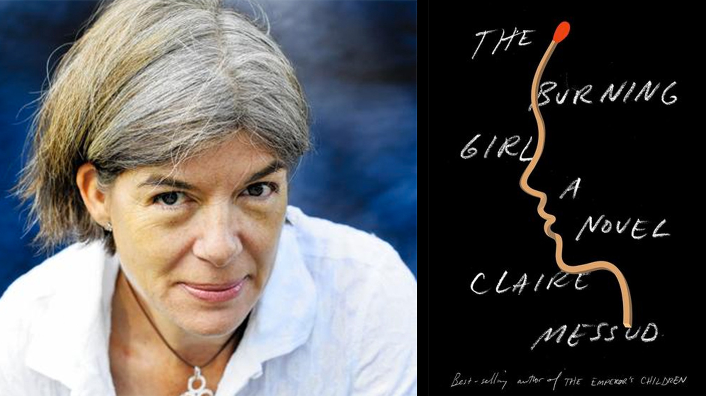

Claire Messud and I met outside, under the blue umbrellas of Pamplona Cafe. The day was cloudy but the author wore a thin grey sweater and a smile. She’d arrived a few minutes past the hour, which most students would probably call early, but Messud began by apologizing: she’d bumped into a former student in the lobby of the English department and had to say hello, probably with a hug, the same way she’d greeted me. We sat and ordered coffee. Next door, a baptism was happening at St. Paul’s. A fire truck screamed past, and I asked about last week’s reading at the Harvard bookstore.
“I suppose one way it might be expressed,” Messud tapped her cup, “is that I’m writing a cliche of frustrated narrative expectations.” She was referring to the suggestion, or maybe it was a complaint, that The Burning Girl, her newest novel, lacked the kind of sexiness that defined the bestselling The Woman Upstairs or 2006’s The Emperor’s Children.
“I wrote The Emperor’s Children sixteen years ago. This isn’t that novel.”
What Girl is, she says, is a fairytale for grown-ups. Messud establishes the note of desperate parable right upfront in her epigraph, with an Elizabeth Bishop poem which reads: “Love’s the boy stood on the burning deck/ Trying to recite “The boy stood on the burning deck.” The story, Messud says, is purposefully archetypical. Two girls go into a dark wood; it doesn’t spoil things for you to know that only one of them returns.
This kind of simplicity has confused some folks, such as Christopher Lydon, who spoke with the author last Monday at a reading by Harvard Book Store. Before a packed audience at the Brattle Theatre, the journalist worried through his question:
“How,” he asked, “Are we meant to interpret that conclusion?” He was referring to the undefined relationship between Julia and Cassie, the two young protagonists at the heart of Messud’s novel.
“Well.” The author sounded the way she did in workshop when someone asked a question that’d been answered only a moment before. “Do we ever really know?”
At the cafe, I asked about these twin desires: for a sexy novel, for a need to “know how it ends.”
“I’ve said it before,” Messud said, tapping the salt shaker. “Sometimes people want something else of the work. And that’s OK. I’m just not here to give it.”
IFJ: Lydon asked about a lack of sexual tension in Julia and Cassie’s friendship. Has this been a frequent Q?
I think it’s interesting. He used the word ‘muted.’ And a few reviews, by men, have used the word ‘muted.’ In my last novel, the character begins the work with a rant. And Julia is not Nora. A lot of people hated Nora’s voice; some people loved Nora’s voice. And so those who did love Nora’s voice hate Julia’s voice, because they’re not the same. You know, as a kid I had great passions. I had great, passionate emotions for my friends. Which, in retrospect, seem much like the passions of love later on –– that I was that invested. But that wasn’t something –– back to Elizabeth Bishop –– back to telling my story –– it wasn’t something that I would’ve articulated to anyone. Not even to my diary. My sense of the parameters of expression were different.
IFJ: So this novel takes our expectation of a gruesome or darker ending and turns it around.
I was aware when writing this book of all the risks I felt I was taking. The cliche, the one we all know is, ‘teenage girl goes bad, comes to a bad end.’ And we’ve all seen that story. We’ve seen it on television and read it in books. And it’s a very familiar story. My aim in writing the book was that of those broader questions of telling stories in general, but I also aimed to say: ‘You think you know this story. But you don’t: you never know this story.’ But what does it say about our culture that this is the story on some level that we want and expect?’
IF: There’s this one line where Julia says, about these kinds of stories, that they ‘make her the heroine.’ And that rang true, in a weird way.
There’s this weird lure! I feel that it’s part of the culture: it has a bad end, but that’s when you get to be the star of the show. There’s always some resignation and some lament in being the storyteller, as opposed to being the one about which the story is told—but, on the other hand, the stories we choose to tell are the sensational: the ones where the character steps outside the parameters of role, of the good girl, and even in telling it—well, there’s that passage in the book where Julia imagines Cassie’s experience of stepping into the neighbor’s car. And thinks, as she does so, ‘it’s so scary, it’s so scary,’ but then she has this moment of self-realization. ‘Maybe it’s just me? Maybe I’m just inventing that fear.’ And actually, it’s weirdly titillating to her. Because, you know, ‘I’m imagining getting into the car, I’m not actually in the car, I’m imagining all that fear’; in some ways, it has the effect of a ghost story, like a thriller. Narrating the story, imagining it, allows you to release fear, in order to contain it.
IFJ: In your dedications, you credit Louise Gluck’s poem ‘Midsummer,’ which is sort of about that kind of transition –– and yet it’s the Elizabeth Bishop poem, “Casabianca,” which opens the work. Why?
Well, Gluck’s is a beautiful work, but it’s a poem about adolescence. It’s an erotic poem, an awakening, and it’s a communal poem. It’s about a particular kind of group dynamic. Those things are important for me in this narrative, but I suppose what’s more important is this specific friendship between Julia and Cassie and the question of narrativity implied.
The “Casabianca,” poem, well –– there used to be a program on British radio, you must even have it now, known as Desert Island tapes. And they’d ask you to tell your life in seven pieces of music–– seven items to express who you were ––if you had seven items, what would they be? This poem would be one. Elizabeth Bishop was my formative poet. Before her, I had read poems and loved them, but then I found her, and I thought, this is a poet who articulates something. She had this sense of humor that just spoke to me.
IFJ: It’s a very satirical poem.
Right! There’s a kind of acidity –– acerbity –– an ascetic quality. It’s the plainness with the humor, which is actually incredibly tough. If you think of that one poem of hers, “The Art of Losing,” –– “is not hard to master/ losing you –– don’t say it –– a disaster.” Now I’m mangling it, but Bishop writes about this string of very simple, very light items, lost –– a ring of keys, your old house, or whatever –– the rhythms and the diction are so very simple and light but the emotional import is very heavy. And you know, Casabianca was a poem that I loved at 17. So that was why.
IFJ: There’s something so poignant about the boy literally creating the situation - even as he burns.
CM: Right –– but there’s two boys. Because, ‘love’s the burning boy/ stood on the deck.’ There’s the boy in the original poem, and then there’s the second poem –– a boy on deck, which stands in for the stage, trying to recite the original parlor poem. In the last line where Bishop writes, ‘and love’s the burning boy,’ she means that love is the person trying to tell the story. Who’s the burning girl? Well, there’s Cassie Burnes, literally the burning girl –– but there’s also Julia, the one stammering elocution. And in the way the story is told, in the stammering itself: there’s so much self-conscious artifice. So much fakery. Not even willed, all of it, some of it is unconscious, but it’s the difficulty of telling the story.
I don’t know if you’ve had this experience, but the pain of being a writer –– which is why I don’t write about my life –– why I make stuff up –– is that if you try to write an experience that you’ve had, it covers it in concrete and tamps it down. It’s smaller than it was before. It’s fixed in some way it wasn’t and it’s very hard to get back all the ways it could have been before you set those words down on paper. It’s not that you can’t capture something important about it. Or even the chief of it. But you have to let go of things, too. Of course, if you’re making them up, it’s not quite the same because you’re not aware of what you’ve lost in quite the same way.
But when you’re telling somebody what a childhood best friend is like, you’re never really able to do so: it’s always a containment of the facts, it’s always not quite all of it. It’s always not quite true.
IFJ: But isn’t there some kind of freedom to that? Do you see yourself in Julia?
CM: For me, this is a book about what it is to be a writer, as much as it is about these two girls and their story. There are moments where Julia says, literally says, I am the Cassandra. You know, it’s the storyteller’s eye –– just a pure knowledge. Whether it’s sitting in front of the film and whispering to your friend, ‘He’s going to die,’ and your friend says, ‘What are you talking about?’ But it’s just a way of seeing the world. A way of viewing the world, narratively. But then of course he does die, because it’s a rare film that doesn’t give you what you expect. And it’s the same in life. They sort of set things up: ‘I’m the storyteller, I’m telling your story; I exist as the vehicle or the filter. But I have something else –– I can see the future and you are doomed.’
I’ve told the story of finding my aunt’s diaries to journalists, because it so impressed upon me how much we project our own narratives. It’s as if we have this, and this, and this [here, Messud reaches for the salt and pepper and napkin holder, positions them to make her point]––and I spin a web between these actual points. And I spin a web, which is my actual understanding of what happened, and actually all I have are these points. And somebody could look at them and say, well, actually, your web is not right.
So that was very much in mind as I was writing the last book, and, in a different way, this book as well. Which is about a different kind of life. When you’re a kid, the boundaries don’t exist, the web doesn’t exist: this is what you’ve got, and you’re fine with it! But as you get a bit bigger the boundaries exist.
IFJ: It’s sort of a necessary process of self-definition.
Right! It’s an adolescent process. I’m told that nobody reads Freud anymore, but maybe they read Lacan, and the whole thing of the mirror stage: when a child realizes, ‘that’s me in the mirror, I have an outline, I’m finite, not everything is part of me.’ I must have been either six or five when I asked my mother, if I looked at a painting, might I be able to get inside it. And my mother said, “I don’t know, dear.” And I thought, ok, she’s a liar… Because it seemed sort of unlikely to me, but I still had some faith that those boundaries were porous.
But in adolescence, it’s part of defining oneself to assert these boundaries, to start telling those stories. And part of that is to make up who you are, about how you are, and it’s necessary to define those differences between yourself and others, and what makes you the same or different.
When you’re a kid, if you’re healthy, you don’t have a body. You climb trees, you do somersaults –– you just go. Well, not me, I was crap at cartwheels. But for girls, all of a sudden you have a body. And all of a sudden it happens to you. And it does happen to you. At different times, in different ways. It happens: and how we respond to that transition, depends on who we are and where we are when it happens. It puts a lot of stress on intimacies.
IFJ: How do you balance writing with your teaching? Did teaching a workshop influence this book?
CM: I’m not usually writing as I’m teaching. I am not writing during term time. I mean I write other things –– book reviews, other things –– but not fiction. I’m sure that, in some way, the voices of young adults like yourself are with me, but I was focused on my daughter’s age group. She’s sixteen now, which makes her two years younger than Julia. At times some people have asked, ‘How did you do your research? What music would your girls listen to?’ Well, all I had do was drive the car! I don’t know if you remember it from that age, but as a parent, there comes a point at which you’re invisible –– some point at which you become a hired guy. That’s the demographic I was channeling: this slightly younger age group, although many reviewers have said, ‘she’s too articulate.’ A character in fiction is not representative of anything. A character is representative of themselves. Do I believe that Julia might exist? I do. Does she seem implausible to me? I wrote her.
IFJ: You said at the reading that it’s impossible to live the life while writing about it. And Julia, in your novel, says the same thing: it’s a blessing and a curse.
CM: Right. You can’t do both at the same time. And well –– it’s like –– I guess it’s changed now, but it’s sort of like being the photographer. It’s the way to insert yourself into an event, if you’re socially anxious: to be able to step behind the camera and take pictures. Which is different now, what with the selfie –– you can enter the frame. But historically, taking the picture meant stepping outside of the frame. And I think that this is the artist’s role. It’s the liminal role. On the threshold.’